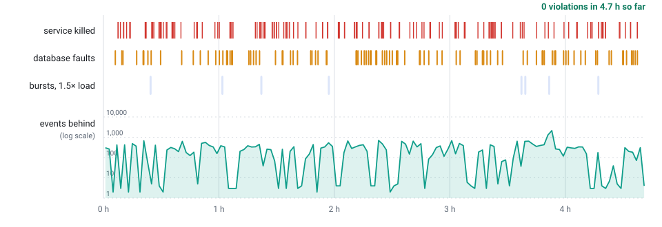

Webhooks that survive failure.
A self-hosted webhook delivery service. Post an event once: it is on disk before you get the answer, then signed, retried and replayable through crashes, outages and slow receivers.
$ curl -d '{"type":"order.paid"}' hooks/events {"id":41} # on disk (fsync) before this line → POST https://shop.example/hook webhook-id: evt_41 webhook-signature: v1,5Zm7… ← 204 delivered → POST https://erp.example/hook ← 503 retry at 5 s, 5 min, 35 min…
On disk before the answer
202 only after the flush that covers the event. Survives kill -9 and power cuts.
Signed, and rotatable
Standard Webhooks signatures. Rotate a secret with both signatures valid, so receivers switch without downtime.
Retry, dead-letter, replay
Nine retries over about three days, then a dead letter you can list and replay.
Sending a webhook is easy. Not losing one is the work.
| When | What hooks does |
|---|---|
| The service is killed after it said yes | The event is on disk first. After a restart it is delivered; nothing acknowledged is lost. |
| A receiver is down for hours | Retries on a growing schedule, then a dead letter you can list and replay. |
| A receiver is slow | Each endpoint has its own pace; the others do not wait. |
| The service dies after a receiver answered, before it wrote that down | The event is sent again. Delivery is at least once, so receivers de-duplicate on webhook-id. |
How it works
One process, two logs. The logs are the truth; the database is optional.
We try to break it.
Kill the process. Cut the database. Make receivers hang, reset and lie. Run it under load. Then a separate checker looks at every event for loss, repetition and bad signatures.

kill -9 as a power cut; each amber bar, a database cut, frozen or black-holed. Every rise returns to nearly zero. What it checks, and what the first two runs found.The tests, what they found, and how each claim was measured
Where it fits
For teams that need durable webhook delivery without building a sender or running a messaging platform.
| You run | You get | You give up | |
|---|---|---|---|
| hooks | One binary, optional PostgreSQL | Signing, retry, replay and per-endpoint pace, on your disk | One process: no clustering, no strict ordering |
| A queue and your own workers | A broker, and the workers you write | Whatever you build | Signing, pacing and replay are yours to write and test |
| A hosted webhook service | Nothing | Dashboards, scale | Your events pass through a third party |
Built for
- SaaS products sending customer webhooks
- Billing and payment events
- CRM and ERP integrations
- Internal event-driven services
Not for
- Stream processing or analytics at Kafka scale
- Realtime messaging to browsers
- A hosted webhook marketplace
What you get
Replay
One event to one endpoint, or a whole endpoint’s dead letters in bulk.
Event filters
Endpoints subscribe to invoice.*; the rest is skipped for free.
Per-endpoint pace
A rate and a concurrency for each; a slow one never stalls the rest.
Circuit breaker
An endpoint that has failed for days is paused, its events kept.
Cron
Schedules that fire exactly once, even if the service is killed mid-fire.
Idempotency
The same key returns the same answer, across crashes.
Operable
/readyz, Prometheus /metrics, graceful stop, backup and restore.
Hard to run unsafe
Scoped tokens, and a production profile that refuses to start open. Deliveries go only to public addresses.
Try it
git clone https://github.com/alpibrusl/cancho-hooks && cd cancho-hooks
scripts/build.sh # one binary: build/hooks
mkdir data && echo "0 127.0.0.1 9100 whsec_$(head -c24 /dev/urandom | base64)" > data/endpoints.conf
build/hooks --port 8080 --dir data --allow-private-hosts 1 &
curl -d '{"type":"user.created"}' localhost:8080/events # {"id":1}Building needs the pinned cancho compiler: the README has the extra lines, and a receiver that verifies each signature.
A durable webhook server, built in cancho
cancho is a typed systems language whose compiler writes down what a program may do. For infrastructure that is the point: that report is checked in CI, so a new foreign call is a change somebody has to approve.
hooks: foreign calls
hooks-pure: foreign calls
Logs, the PostgreSQL client (SCRAM), DNS, HTTP and signatures are cancho too. No unsafe.
Small and bounded
Measured on a shared 4-core VM. Each figure has its method on the evidence page.
Disk for 3,000,000 events
Throughput has not been benchmarked. The only per-delivery figure is the measured CPU cost (about 100 µs over plain HTTP), and what it implies is on the evidence page, labelled as worked out.